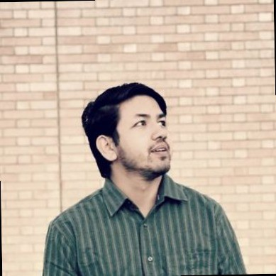

PhD Candidate · AI/ML Researcher · LLM & Computer Vision Specialist
Developing cutting-edge hybrid architectures combining CNNs, Transformers, and Large Language Models for real-world applications. Published researcher with 6+ papers and Best Paper Award at ISBRA 2024.

PhD Candidate in Computer Science
NC A&T State University, USA
Pushing AI boundaries through innovative research
Developing LLM-based solutions for multimodal reasoning (MARVEL), violence detection, and federated learning. Fine-tuned GPT-2 achieving 100% accuracy on protein scaffold filling problem.
Building hybrid CNN-Transformer architectures for concealed weapon detection using thermal imagery, deepfake detection with 97% accuracy.
Novel probabilistic and ML approaches for Protein Scaffold Filling. Transformer and GPT-based models achieving state-of-the-art performance.
Implementing federated learning for UAV intrusion detection, Transformer-to-CNN knowledge distillation for IoT networks.
Advancing violence detection through multimodal LLM analysis (MARVEL), interpretable ECG-style temporal monitoring (ViolenceWave).
GPU acceleration, CUDA programming, model optimization for edge deployment and distributed computing.
Peer-reviewed papers in top journals and conferences
1st Author • LLM-based multimodal reasoning
3rd Author • EfficientNet to Lightweight CNN
1st Author • Interactive IoT security labs
1st Author • Novel temporal approach
NC A&T State University
Cedar Gate Technologies, Nepal
Fusemachines, Nepal
NC A&T State University
ISBRA 2024
Fusemachines AI Fellowship 2022
Rapid Coding - NCIT NEXT 2019
I'm seeking Research Scientist, ML Engineer, and AI Research positions where I can apply my expertise in LLMs, computer vision, and deep learning.
Whether it's cutting-edge AI research, industry collaboration, or innovative product development - I'm ready.
Send MessageCurrently at
NC A&T State University
Greensboro, NC 27411